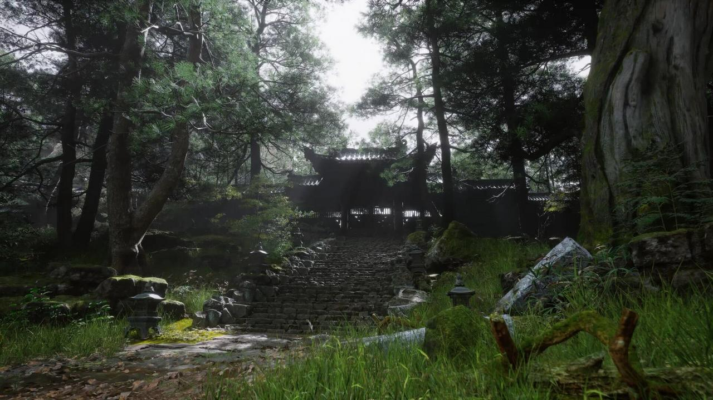
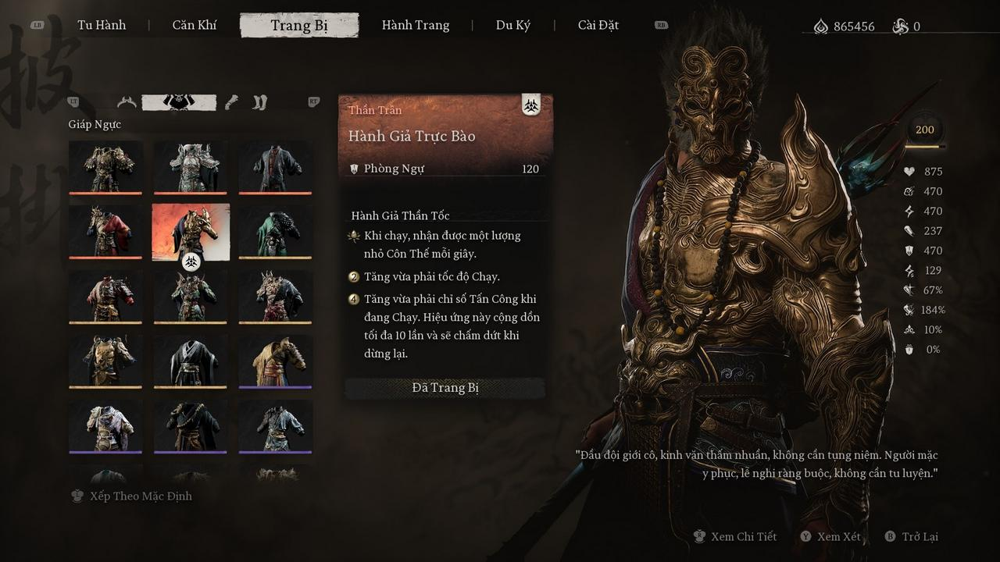
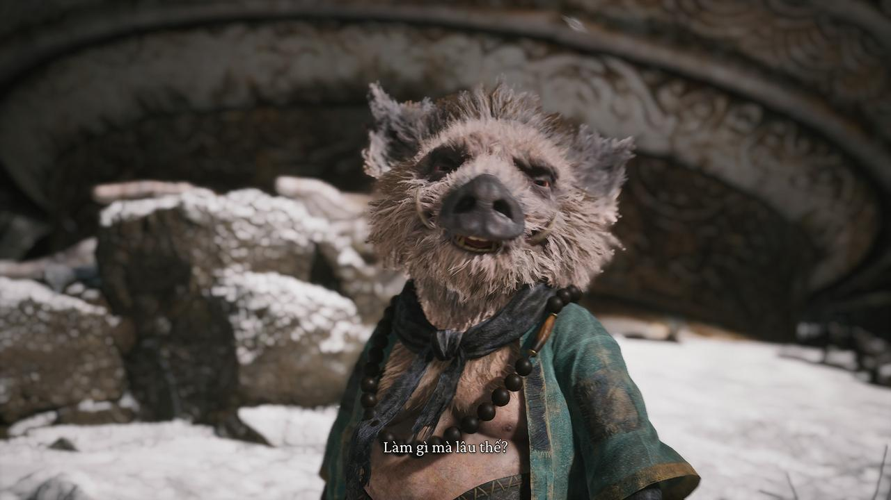
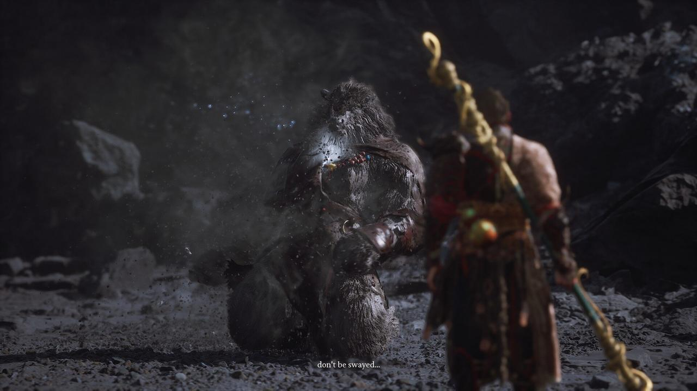
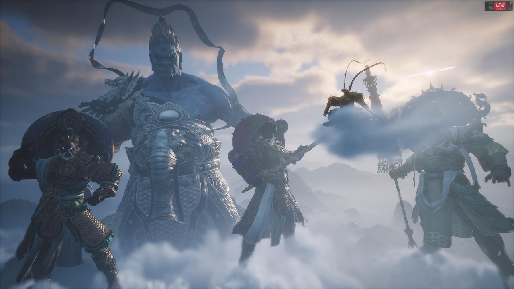

Thế giới Tây Du kỳ ảo!
11134 commentGame Science đã đầu tư rất chỉn chu vào trải nghiệm của người chơi ở nhiều mặt, cho họ hòa mình vào thế giới trong truyện Tây Du Ký chân thật nhất có thể: từ hình ảnh, âm nhạc cho đến trang phục, vũ khí, nhân vật và cảnh vật đều được xây dựng rất chi tiết, hấp dẫn. Ngay từ những phân khúc đầu game, người chơi đã bị mê hoặc bởi phong cách mỹ thuật đặc sắc đậm màu văn hóa Trung Hoa của trò chơi. Với sức mạnh của Unreal Engine 5, phong cảnh cùng kiến trúc chùa chiền, đền đài trong Black Myth: Wukong được thiết kế tuyệt đẹp đến ngỡ ngàng và mang lại cảm giác vô cùng “điện ảnh”, đủ để thỏa mãn và khỏa lấp được bất kỳ một bộ óc giàu trí tưởng tượng nhất!
Đồ họa xuất sắc
Những khung cảnh như bước ra từ các bức tranh thủy mặc, những công trình kiến trúc nổi bật trong hầu hết các Chương đều được đội ngũ Game Science xây dựng một cách chỉn chu và đầy sự tôn trọng. Đặc biệt, điều làm nên sự đỉnh cao cho những “siêu công trình” này là chúng đều được dựng theo các thắng cảnh nổi tiếng của Trung Quốc. Như Chương đầu dễ liên tưởng đến cảnh vật của khu du lịch nổi tiếng ở Quế Lâm. Chương thứ hai lại mang không khí của vùng sa mạc Tân Cương nổi tiếng.
“Khủng” nhất chắc phải kể đến “Tiểu Tây Thiên” (Xiaoxitian) ở Chương 3 – nơi người chơi sẽ phải há hốc mồm trước Thần điện như được bê nguyên xi từ đời thực vào vậy. Ảo hơn cả, là Thần điện Tiểu Tây Thiên này không chỉ đóng vai trò như một bức nền, mà trong một số trường đoạn chính người chơi sẽ được thu nhỏ lại và “chu du” trong chính Tiểu Tây Thiên đó, với mức độ chi tiết phải khiến người viết sững sờ!
Chính nhờ sự hoành tráng này, mà tính quảng bá văn hóa của Black Myth: Wukong đã giúp thúc đẩy mảng du lịch ở hàng chục những địa điểm cổ kính Trung Quốc, tăng doanh số đến hơn 50%. Sức ảnh hưởng quả thực đáng nể!
Các trang bị hoàn hảo đến cân bằng
Không chỉ cuốn hút người chơi bởi ngoại cảnh xuất sắc, nền đồ họa thuộc hàng “thượng hạng” của Black Myth: Wukong còn khiến người chơi mê mẫn bởi sự tỉ mỉ cho những mảnh giáp vận lên người Thiên Mệnh Hầu. Bạn đọc có thể chưa biết, ban đầu Black Myth: Wukong được phát triển trên nền Unreal Engine 4, tuy nhiên Game Science đã bất ngờ hoãn ra mắt và đầu tư thêm một năm ròng chỉ để… mang hết tất cả những gì tinh túy nhất qua Unreal Engine 5, nhờ những công nghệ vượt trội của nó. Đó là lúc người chơi sẽ phải choáng ngợp trước sự lộng lẫy của những chiến bào trong game.
Một khi mở giao diện hành trang, người viết luôn phải trầm trồ trước sự “ngầu lòi” mà ngỡ bản thân là Tề Thiên Đại Thánh tái sinh vậy. Từng đường nét uốn lượn của hoa văn trên từng mắt giáp, đến sự lung linh lấp lánh của những chất liệu quý hiếm làm nên sự trang trọng của chiến bào. Sự chi tiết này tất nhiên không chỉ tập trung ở giao diện trang bị, mà game thủ hoàn toàn có thể “soi” bằng hệ thống chụp ảnh (photo mode) “căng đét” của game. Game Sciecne có vẻ rất biết “chiều” người hâm mộ của mình ở khoản thời trang này.
Tiện kể về phần hành trang, game còn chăm chút phần “nội tại”: từ giao diện trình đơn (menu), các biểu tượng (icon) cho tới những thứ như hành trang, bách khoa toàn thư, bảng kỹ năng, trang bị, được thiết kế dễ nhìn nhờ bố cục sắp xếp thông tin hợp lý, gọn gàng chứ không rối rắm như các game “cộp mác AAA” thời gian gần đây, như Starfield là một ví dụ điển hình.
Âm nhạc sắc sảo kinh ngạc
Đồng hành cùng nền đồ họa, với những fan của bộ phim Tây Du Ký (1986), chúng ta sẽ gặp lại bài hát “thương hiệu” từ bản phim này trong game – Celestial Symphony (Vân Cung Tấn Âm), nó được phối âm, phối khí hiện đại hơn nhưng vẫn giữ được chất hùng hồn, hoành tráng như ngày nào!
Không dừng ở mỗi bài nhạc chủ đạo, với mỗi chương trong Tây Du Ký mà người chơi sẽ chu du qua đều có các bản nhạc nền phù hợp, được sử dụng như một phép kể chuyện để nâng cảm xúc của người chơi lên mức cao nhất. Lúc thì ý nghĩa và ca từ đều như những lời răn dạy và nêu bật lên thông điệp của màn chơi (Chương 2), lúc thì sâu lắng chạm tâm can đi kèm một “MV” ngôn tình bi ai (Chương 4), khi thì rộn ràng tiếng trống thúc giục và đầy anh hùng ca nhưng lại để lại một sự trống rỗng đến khó thở (Chương 5), càng làm sâu đậm thêm kỷ niệm của những người hâm mộ bộ phim.
Năm trăm năm sau khi thỉnh kinh, Black Myth: Wukong vẫn sẽ cho người chơi gặp lại những nhân vật biểu tượng quen thuộc làm nên thương hiệu Tây Du Ký như Dương Tiễn, Tứ Đại Thiên Vương, Hắc Hùng Tinh, Trư Bát Giới… Những nhân vật này được thiết kế vừa đẹp (Bình Bình), vừa dễ thương mà độc đáo (Trư Bát Giới), lại vừa uy dũng như Dần Tướng Quân, Hồng Hài Nhi, Dương Tiễn…
Gameplay đơn giản nhưng không nhàm chán
Nào là những màn múa gậy đỡ tên vùn vụt cho đến “thiên biến vạn hóa” dài ngắn tùy ý của Như Ý Kim Cô Bổng khi giao đấu, hay tuyệt kỹ leo lên thân gậy trứ danh thật sự làm thỏa mãn những người hâm mộ bộ phim Tây Du Ký. Hệ thống phép thuật của Black Myth: Wukong thì miễn chê: vừa đẹp mắt vừa hiệu quả, tuy rằng có những phép e rằng… quá mạnh, đủ để dùng chúng cho tới nửa sau game như Định Thân (Immobilize) thường dùng để “điểm huyệt” đối thủ, hay với phép Phân Thân (A Pluck of Many) khi nâng cấp lên tối đa có thể cho phép người chơi “không cần động một móng tay” mà vẫn có thể hạ gục nhiều trùm nhỏ (mini boss).
Cốt truyện hậu Tây Du đầy bất ngờ và sâu sắc
Phần cốt lõi của Black Myth: Wukong, hiển nhiên vẫn là những pha chiến đấu đặc sắc. Trong những đoạn trailer được tung ra lúc ban đầu khi chưa ra mắt, game để lại khá nhiều hoài nghi từ phía người chơi: Đây có phải là game “souls-like”? Trông có vẻ “giống” nhưng lại “không” mà… cũng không thể chắc chắn.
Và khi trò chơi được ra mắt, có thể thấy Black Myth: Wukong như “một biến thể” của dạng “Souls-like”, được làm “nhẹ” hơn nhưng không có nghĩa là dễ dàng, thường được gọi là “Souls-lite”.
Bởi chính sự phổ biến và có lượng người chơi hùng hậu trong khoảng 5 năm trở lại đây, việc Black Myth: Wukong kế thừa những đặc trưng của kiểu game “souls-like” này là điều dễ hiểu. Điểm khó là Game Science phải biết cách cân bằng giữa “học hỏi” và “sao chép”, bởi lẽ ngoài kia đã có rất nhiều “tấm gương” cho thấy để đạt được cảnh giới của Souls-game từ nhà FromSoftware là điều gần như không thể.
Vậy bí quyết chính là “học hỏi” và “kết hợp” để đảm bảo độ cân bằng, vừa giảm được độ kén người chơi, vừa tạo ra một lối đi mới mà ở đó có thể sau này chúng ta sẽ còn có một hậu truyện của Black Myth: Wukong còn đột phá hơn nữa. Sự “học hỏi” mà game có cũng được tinh chỉnh rất nhiều và chủ yếu mang tính “làm quen” là chủ yếu. Lấy ví dụ như hệ thống chiến đấu có nhịp độ và phải dựa vào thanh thể lực, tuy nhiên sự phụ thuộc không quá nặng như trong các Souls-game, mà ngược lại chỉ đóng vai trò quan trọng ở trong hai Chương đầu.
Tổng Kết
Người mê game Trung Quốc, đặc biệt những người từng có "tuổi thơ dữ dội" với Tây Du Ký, có lẽ đã chờ rất lâu mới được thấy một con game được đầu tư chỉn chu và hấp dẫn như Black Myth: Wukong. Những "scandal" và tranh cãi ồn ào về game cũng không cản được làn sóng đón nhận tích cực trên toàn thế giới, khi mà chỉ trong 3 ngày ra mắt, Black Myth: Wukong bán ra 10 triệu bản. Đây có lẽ sẽ là một "phát súng" mở đầu cho hướng đi mới cho ngành game Trung Quốc: tạo động lực phát triển những tựa game AAA chất lượng về hình ảnh và nội dung, đi kèm đó là chiến lược quan trọng trong việc quảng bá văn hóa - “sức mạnh mềm”. Còn thị trường game offline thế giới chính thức được bổ sung thêm "hai thành viên" mạnh về tiềm năng và nguồn lực: Trung Quốc và Hàn Quốc, mở ra tương lai tươi sáng hơn cho mảng game offline AAA, vốn đang chững lại bởi sự "hoành hành" của các game live-service và vấn nạn "woke" thách thức dư luận.

topgamer June 21, 2024
Game này chơi phải full công suất 100% mới may ra qua màn được. Nhưng mà cực kì đã.
Replysuperstar_9xSeptember 11, 2023
Game này thì khỏi bàn. Chơi từ hồi bản đầu tiên 1999 tới giờ vẫn thấy mê.
Reply